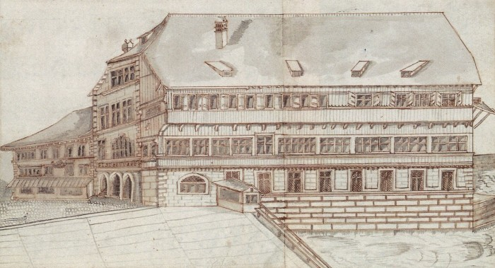

Das städtische Rathaus war der Ort, an dem der Kleine Rat und der Bürgermeister Waldmann (im Amt von 1483–1489) regierten. Vor dem Rathaus ereignete sich der Auflauf von 1489. Nahe des Rathauses lag auch der Fischmarkt, wo die Urteilsverkündung stattfand und Waldmann die Ritterwürde aberkannt wurde.
Zur Orientierung lohnt sich ein Blick in Richtung ‹Rüden›, dem Gesellschaftshaus der Konstaffel. Das Haus lag damals direkt am Wasser, wie der Murerplan (oben) zeigt.
Die zeigenössischen Darstellungen des Zürcher Rathauses aus der Chronik des Gerold Edlibach und deren Abschrift vermitteln einen Eindruck des damaligen Gebäudes. Die Lage des Hauses erschiesst sich nicht zwingend. Dies fällt bei Eschers Darstellung aus dem 17. Jahrhundert leichter.
Das Rathaus vom Fischmarkt aus, Edlibachchronik und -abschrift, Zentralbibliothek Zürich, Ms A 75, S. [85] 77 und Ms A 77, fol. 47v.
Das Rathaus von der Limmatseite, Edlibachchronik und -abschrift, Zentralbibliothek Zürich, Ms A 75, S. [84] 76 und Ms A 77, fol. 47r.
Rathaus von der Limmatseite/Westen, Escher: Regiments-Buch, Kantonsbibliothek Aarau, MsMur F 33.1, S. 424/425.
Anfang des 15. Jahrhunderts wurde der städtische Alltag noch von nicht-obrigkeitlichen Gemeinschaften bestimmt, namentlich von Bruderschaften und Zünften die soziale, wirtschaftliche und religiöse Funktionen wahrnamen. Diese hatten Ordnungsbefugnis. Im Laufe des 15. Jahrhunderts verfestigten sich die Stadtherrschaften zunehmend in den kleinen Räten. – Gewaltentrennung gab es keine. Bestimmt, regiert und gerichtet wurde von ein und denselben Leuten. Der Grosse Rat und vor allem die Stadtgemeinschaft hatten je länger desto weniger zu sagen.[1]
Städte hatten ihren Einflussbereich zu Territorialherrschaften ausgebaut. Das heisst, sie herrschten flächendeckend über die Landschaft und teilten ihre Herrschaft nicht mehr mit anderen Grundherrschaften.[2] Das von Zürich beherrschte Umland war eigentliches Untertanengebiet. Die Herrschaften wurden grösstenteils in den Jahrzehnten vor dem Alten Zürichkrieg erworben. Sie entsprechen etwa dem heutigen Kantonsgebiet.
Um 1467 lebten in der Stadt Zürich ca. 4000 Einwohnerinnen und Einwohner. Mit der beherrschten Landschaft zusammen ca. 27 000 Bewohner:innen. 1529 war bei 5000 Stadtbewohner:innen die Bevölkerung im gesamten Herrschaftsbereich bereits 55 000 Seelen stark.[3]
Die Gebiete auf der Landschaft verliehen der Stadt politisches Gewicht, aber vor allem auch ökonomische Einkünfte. Feudale Abgaben und Steuern flossen jetzt in die Stadt. Zürich war dabei kein besserer Grundherr als zuvor die Habsburger oder andere Adlige. Zürich führte neue Steuern ein und Wald, Fischental, Grüningen, Ütikon, Stäfa, etc. beschwerten sich, dass sie es vorher besser gehabt hätten.[4]
In dieser Konstellation verstärkten die Städte auch ihre Verwaltung. Diese wurde vermehrt schriftlich geführt und sie wurde professionalisiert. Das Know-how dafür rekrutierte man aus den habsburgischen und reichsstädtischen Zentren. Stadtschreiber oder Notare führten Kanzleien und produzierten Schriftgut. Es ergaben sich Innovationen bei Ordnung und Archivierung. Schrift war ein Machtinstrument. Die Verwaltung griff nun verstärkt ins Umland aus.
An der Wende zur Neuzeit entwickeln die Städte einen eigentlichen ‹Kontrollwahn›. Anfänglich regulierten sie vor allem die Märkte. Dort ging es darum, wem Zugang gewährt wurde, dass Masse und Gewichte stimmten, dass die Preise und die Qualität in Ordnung waren. Damit beugte die Stadt Unruhen vor. Die Städte weiteten ihre Kontrolle aber über den Markt hinaus aus. Sie mischt sich bald in jeden erdenklichen Lebensbereich ein. Alles was das Zusammenleben betraf wurde reglementiert. Es gab Kleiderordnungen, es gab Regeln zum nächtlichen Ausgang und zur Anzahl Gäste bei Taufen, Hochzeiten und Begräbnissen. Die Bürger sollten sich nicht zu fest verschulden, also nicht protzen, kein zu kostbarer Schmuck, keine aufwändige Kleidung, keine zu opulenten Feste. Wobei das Verhindern von Verschwendung und Schulden nur der Auslöser der Regelflut war. Schlussendlich ging es um soziale Differenzierung und Disziplinierung. Die Kleiderordnungen bezweckten etwa, dass die Leute auch sichtbar ihrem Stand zuzuordnen waren.[5]
Diese Phänomene lassen sich am Beispiel der Regierung von Hans Waldmann sehr gut nachvollziehen. Zwar waren solche Regulierungen schon vor Waldmann eingeführt worden, und sie waren in allen Städteorten gleich verbreitet. Im Fall Waldmann gaben sie aber den Anstoss zum Aufstand. – Genau dies wird in einer der wichtigsten Quellen zum Waldmanhandel stark betont, im Hönggerbericht. Dieser schildert die Ereignisse von 1489 aus einer landschaftlichen Perspektive. Der Hönggerbericht beginnt wie folgt:
Im Jahr 1489 was ein burgermeister zuo Zürich, der hiess Hans Waldmann. Der masste sich solche Macht an und besass einen solchen Eigenwillen, der meint, die ganz lantschaft im ganzen Zürichpiett und herrschaft ganz und gar nach synem wilen mitt fil nüwen uffsetzen [Verordnungen und Auflagen] undertenig zuo machen…
Die Herrschaften erliessen allerlei Verbote: Luxusverbot, Spielverbot, Tanzverbot, Verbot mit Waffen die Kirchweih zu besuchen, in fremde Dienste zu ziehen, neue Weinberge zu pflanzen, junge Tannen zu schlagen, usw.[6]